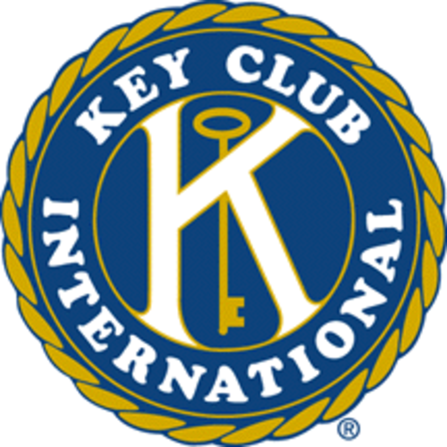
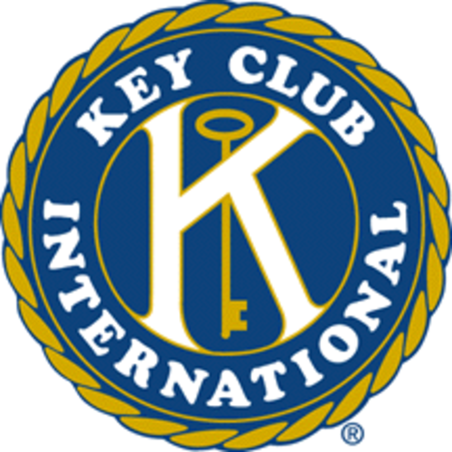
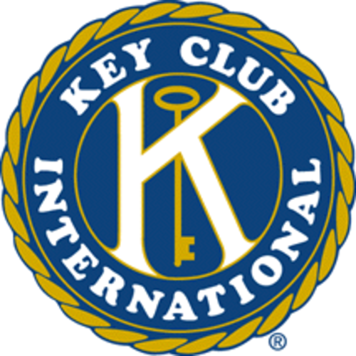

Nicholas Wong
Hello! My name is Nicholas Wong and I am an enthusiastic and motivated second year Business Economics major pursuing my degree at the University of California Riverside. I am an extremely capable individual who performs efficient and effective work in the professional environment. I am always eager to learn and improve in all aspects I am able to.
Over the past few years I have gained a multitude of experience from multiple organizations such as amazon and entrepreneurship and BBQ stop , all of which I believe taught me valuable life skills. One of the most crucial skills I have obtained is that of compassion that I took away from the time I spent shadowing Doctor Rockson Liu. Under Doctor Liu I studied business advertisement as well as basic hospital data processing related to robotic laparoscopic surgery. I observed live surgeries taking copious notes and observing closely surgeries related to hernia removal. Under Doctor Liu’s instruction I also observed interactions with many patients all of whom underwent or were to undergo surgery. The way Doctor Liu interacted with his patients inspired me and opened my eyes to how much compassion and kindness could positively affect the patients. In addition to this, I learned that dedication and hard work to one's craft is essential to success.
The Youth Science Center, Key Club, as well as the Varsity Swim Team Captain are among the few Leadership building organizations I have participated in. From these I have gained a large experience of team working and effective communication skills. I was a member of the swim team’s engagement team, which specializes in the marketing, social media, and communication for the Center’s programs, events, and resources. Here I built my skills with event management and advertising something I had never explored previously. Organizing lineups for swim meets and fundraises helped me gain a better perception of target markets and allowed me to realize the different approaches in any situation regarding event planning and coordination with team mates. I also learnt how to work well in a team and how to be a leader as well as a team player, the balance between having a strong personality and being compassionate and understanding with your teammates/coworkers which also ties into my work with Doctor Liu.
My skills include computer literacy in Microsoft Office, Microsoft Office 360, and social media platforms such as facebook, instagram, linkedin etc.; expert knowledge of professional and technical communication; proficient technical writer, copywriter, copyeditor, and research analyst; able to properly and effectively operate a forklift as well as drive vehicles with stick shift transmission. Additionally my travelling experiences have helped me gain a broader understanding of the world as well as be more open to interpretation of new and seemingly outlandish ideas. Snowboarding around california has also allowed me to gain better social skills and become extremely approachable as well, a skill I believe is key in making successful negotiations. To conclude I have an astounding sense of humor and and am relatively pretty decent looking.
Experience
Amazon Fufillment
• Computer literate in Microsoft Office, Microsoft Office 360, and social media
• Proficient technical writer, copywriter, copyeditor, and research analyst
• Team working skills through experience from student committee and competitive athletic teams
Education
UC Riverside
Portfolio
 


